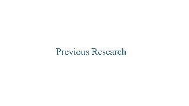
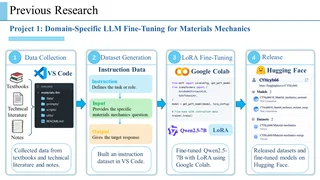
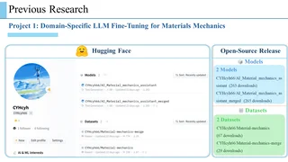
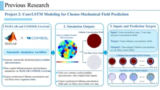
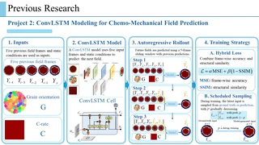
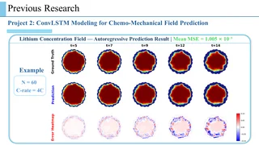
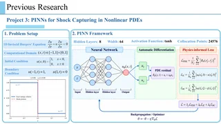
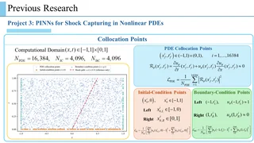
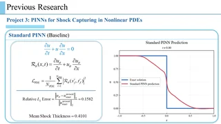
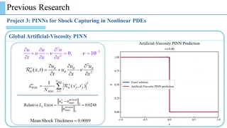

← Previous
1. Previous Research 2. LLM Fine-Tuning: Workflow 3. LLM Fine-Tuning: Open-Source Release 4. ConvLSTM: Simulation Data 5. ConvLSTM: Model 6. ConvLSTM: Prediction Results 7. PINNs: Problem and Framework 8. PINNs: Computational Domain 9. Standard PINN Results 10. Artificial-Viscosity PINN Results Next →
1 / 10
Pause GIFs
Full screen
Use ← / → to change slides. Esc exits full screen or returns to Projects. Animated figures play automatically. On a phone, rotate to landscape for a larger view.
All slides 
1. Previous Research 
2. LLM Fine-Tuning: Workflow 
3. LLM Fine-Tuning: Open-Source Release 
4. ConvLSTM: Simulation Data 
5. ConvLSTM: Model 
6. ConvLSTM: Prediction Results 
7. PINNs: Problem and Framework 
8. PINNs: Computational Domain 
9. Standard PINN Results 
10. Artificial-Viscosity PINN Results Enable JavaScript to turn pages and play the animated figures.